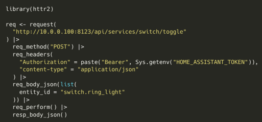
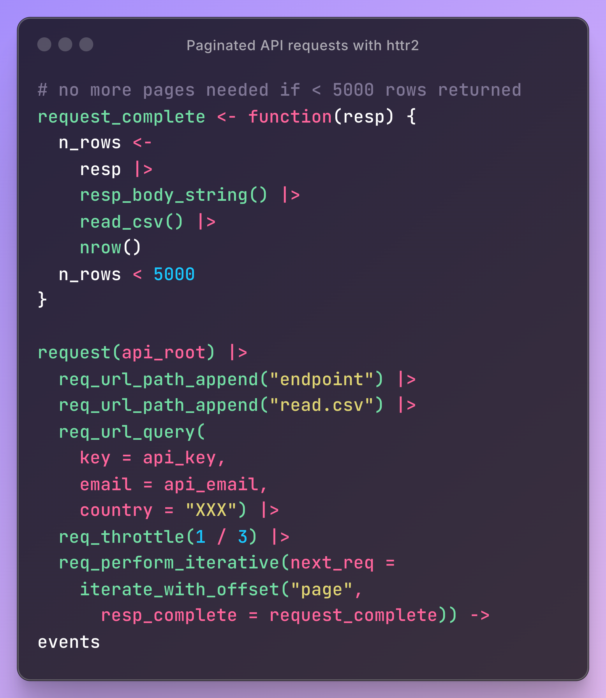

APIs
Misc
- Definition

- REST API

- Packages
- {{requests-ratelimiter}} - A simple wrapper around pyrate-limiter v2 that adds convenient integration with the requests library
- {beekeeper} - Used to create and maintain R packages that wrap APIs.
- Resources
- W3 School HTTP Request methods reference page
- Design questions
- Should the API receive the entire datapoint (e.g sensitve customer info) or just an ID for you to query in a database itself?
- Where should the model be loaded from? Disk? Cloud? (see Production, Deployment >> Model Deployment Strategies)
- What diagnostic output should be returned along with result?
- Use CI/CD to unit test, rebuild, and deploy the API every time there’s a push a commit to the production branch of your repo.
- Best Practices Thread
- Versioning
- IDs vs UUIDs
- Nested resources
- JSON API
- Let the client decide what it wants
- Important to create unit tests to use before code goes into production
- Test all endpoints
- Check data types
- {testthat}
Example
library(testthat) source("rest_controller.R") testthat("output is a probability", { input <- list(id = 123, name = "Ralph") result <- make_prediction(input) expect_gte(result, 0) expect_lte(result, 1) })
- An IO-bound task spends most of its time waiting for IO responses, which can be responses from webpages, databases, or disks. For web development where a request needs to fetch data from APIs or databases, it’s an IO-bound task and concurrency can be achieved with either threading or async/await to minimize the waiting time from external resources.
Terms
- Async/Await - Unlike threading where the OS has control, with this method, we can decide which part of the code can be awaited and thus control can be switched to run other parts of the code. The tasks need to cooperate and announce when the control will be switched out. And all this is done in a single thread with the
awaitcommand. (article) - Body - information that is sent to the server. (Can’t use with GET requests.)
- Endpoint - a part of the URL you visit. For example, the endpoint of the URL https://example.com/predict is /predict
- Headers - used for providing information (think authentication credentials, for example). They are provided as key-value pairs
- Method - a type of request you’re sending, can be either GET, POST, PUT, PATCH, and DELETE. They are used to perform one of these actions: Create, Read, Update, Delete (CRUD)
- Pooled Requests - A technique where multiple individual requests are combined or “pooled” into a single API call. May require more complex error handling, as you’ll need to manage partial successes or failures within the pooled request
Methods
- Batch endpoints: Some APIs offer specific endpoints designed to handle multiple operations in a single call.
- Request bundling: Clients can aggregate multiple requests into a single payload before sending it to the API.
- Threading - Uses multiple threads and takes turns to run the code. It achieves concurrency with pre-emptive multitasking which means we cannot determine when to run which code in which thread. It’s the operating system that determines which code should be run in which thread. The control can be switched at any point between threads by the operating system. This is why we often see random results with threading (article)
Request Methods
{kind=link}
Misc
- If you’re writing a function or script, you should check whether the status code is in the 200s before additional code runs.
- HTTP 429 - Too Many Requests
GET
GET is a request for data where the parameters for that request are inserted into the URL usually after a ?.
Examples
# example 1 args <- list(key = "<key>", id = "<id>", format = "json", output = "full", count = "2") api_json <- GET(url = URL, query = args) # example 2 (with headers) res = GET("https://api.helium.io/v1/dc_burns/sum", query = list(min_time = "2020-07-27T00:00:00Z" , max_time = "2021-07-27T00:00:00Z"), add_headers(`Accept`='application/json' , `Connection`='keep-live')) # example 3 get_book <- function(this_title, this_author = NA){ httr::GET( url = url, query = list( apikey = Sys.getenv("ACCUWEATHER_KEY"), q = ifelse( is.na(this_author), glue::glue('intitle:{this_title}'), glue::glue('intitle:{this_title}+inauthor:{this_author}') ))) }Example: Pull parsed json from raw format
my_url <- paste0("http://dataservice.accuweather.com/forecasts/", "v1/daily/1day/571_pc?apikey=", Sys.getenv("ACCUWEATHER_KEY")) my_raw_result <- httr::GET(my_url) my_content <- httr::content(my_raw_result, as = 'text') dplyr::glimpse(my_content) #get a sense of the structure dat <- jsonlite::fromJSON(my_content)contenthas 3 option for extracting and converting the content of the GET output.- “raw” output asis
- “text” can be easiest to work with for nested json
- “parsed” is a list
POST
Also see Scraping >> POST
POST is also a request for data, but the parameters are typically sent in the body of a json. So, it’s closer to sending data and receiving data than a GET request is.
When you fill out a html form or search inputs on a website and click a submit button, this is a POST request in the background being sent to the webserver.
Example
# base_url from get_url above base_url <- "https://tableau.bi.iu.edu/" vizql <- dashsite_json$vizql_root session_id <- dashsite_json$sessionid sheet_id <- dashsite_json$sheetId post_url <- glue("{base_url}{vizql}/bootstrapSession/sessions/{session_id}") dash_api_output <- POST(post_url, body = list(sheet_id = sheet_id), encode = "form", timeout(300))
{kind=link}
{kind=link}
{kind=link}
{httr2}
POST
- Contacts Home Assistant API and turns off a light.
Paginated Requests
- Also see Scraping >> API >> GET >> Example: Real Estate Addresses
- Example: (source)
request_completechecks the response to see whether another is needed.req_perform_iterativeis added to the request, giving it a canned iterator that takes your function and bumps a query parameter (page for this API) every time you do need another request
GET Request in Parallel
Example
pacman::p_load( dplyr, httr2 ) reqs_dat_comp <- tib_comp |> mutate(latitude = as.character(latitude), longitude = as.character(longitude)) reqs_comp <- purrr::map2(reqs_dat_comp$longitude, reqs_dat_comp$latitude, \(x, y) { request("https://geocoding.geo.census.gov/geocoder/geographies/coordinates") |> req_url_query( "benchmark" = "Public_AR_Current", "vintage" = "Current_Current", "format" = "json", "x" = x, "y" = y ) }) resps_comp <- req_perform_parallel(reqs_comp, max_active = 5) length(resps_failures(resps_comp)) pull_geoid <- function(resp) { resp_json <- resp_body_json(resp) cb_name <- stringr::str_extract(names(resp_json$result$geographies), pattern = "\\d{4} Census Blocks$") |> na.omit() loc_geoid <- purrr::pluck(resp_json, 1, 1, cb_name, 1)$GEOID |> stringr::str_sub(end = 12) return(loc_geoid) } tib_geoids_comp <- resps_data(resps = resps_comp, resp_data = pull_geoid) |> tibble(geoid = _)- reqs_comp is a list of requests — each with different x and y values (longitude, latitude)
req_perform_parallelcalls the API with 5 requests at a timepull_geoidwrangles the responseresps_datatakes a list of responses and appliespull_geoidto each element
Don’t parse an JSON response to a string from an API
Responses are binary. It’s more performant to read the binary directly than to parse the response into a string and then read the string
Example: {yyjsonr} (source)
library(httr2) # format request req <- request("https://jsonplaceholder.typicode.com/users") # send request and get response resp <- req_perform(req) # translate binary to json your_json <- yyjsonr::read_json_raw(resp_body_raw(resp))- Faster than the httr2/jsonlite default,
resp_body_json
- Faster than the httr2/jsonlite default,
{kind=link}
{plumber}
- Serves R objects as an API
- 3 Main Components: Function Definition, Request Type, API Endpoint
- Misc
- Adding `host = “0.0.0.0” to
run_pr()opens the API to external traffic - {valve} - Auto-scales plumber APIs concurrently using Rust libraries Axum, Tokio, and Deadpool — similar to how gunicorn auto-scales fastapi and Flask apps
- Adding `host = “0.0.0.0” to
- Cloud options for serving Plumber APIs
Install everything on an Amazon EC2 instance
Using a Docker image
Saturn Cloud Deployments

Google Cloud Run
Docker/Kubernetes
Managed Solutions
- RStudio Connect
- Digital Ocean
- Load Testing
- {loadtest}
Test how your API performs under various load scenarios
Outputs tibble of various measurements
Example:
library(loadtest) results <- loadtest(url = <api_url>, method = "GET", threads = 200, loops = 1000)- Says simulate 200 users hitting the API 1000 times
- {loadtest}
- Documentation
- Plumber creates an OpenAPI (aka Swagger) YAML file that documents parameters, tags, description, etc. automatically for users to know how to use your API
- Access
- View webui, e.g .(http://127.0.0.1:9251/__docs__/)
- Edit the yaml
- e.g. (http://127.0.0.1:9251/openapi.json)
- Scaling
- Natively can only handle 1 request at a time
- {valve} - Parallelize your plumber APIs. Redirects your plumbing for you.
- {future} - can be used to spawn more R processes to handle multiple requests
Resource: Rstudio Global 2021
Example
# rest_controller.R future::plan("multisession") @* @post /make-prediction make_prediction <- function (req) { future::future({ user_info <- req$body df_user <- clean_data(user_info) # sourced helper function result <- predict(model, data = df_user) result }) }
- Logging
- Useful for debugging, monitoring performance, monitoring usage
- Provides data for ML monitoring to alert in case of data/model drift
- {logger}
Example:
#* @post /make-prediction make_predicition <- function(req) { user_info <- req$body df_user <- clean_data(user_info) # sourced helper function result <- predict(model, data = df_user) logger::log_info(glue("predicted_{user_info$id}_[{result}]{style='color: #990000'}")) aws.s3::s3save(data.frame(id = user_info$id, result = result), ...) result }
- Example: Basic Get request
rest_controller.R
#* @get /sum function(a, b) { as.numeric(a) + as.numeric(b) }- “/sum” is an endpoint
Run Plumber on rest_controller.R
plumber::pr("rest_controller.R") %>% plumber::pr_run(port = 80)- 80 is a standard browser port
Get the sum of 1 + 2 by sending a Get request
- Type “127.0.0.1/sum?a=1&b=2” into your browser
httr::GET("127.0.0.1/sum?a=1&b=2")
- Example: Basic Model Serving
rest_controller.R
source("helper_functions.R") library(tidyverse) model <- read_rds("trained_model.rds") #* @post /make-prediction make_predicition <- function(req) { user_info <- req$body df_user <- clean_data(user_info) # sourced helper function result <- predict(model, data = df_user) result }
{{requests}}
- Use
Sessionto make a pooled request to the same host (Video, Docs)Example
import pathlib import requests links_file = pathilib.Path.cwd() / "links.txt" links = links_file.read_text().splitlines()[:10] headers = {"User-Agent": "Mozilla/5.0 (X!!; Linux x86_64; rv:89.0) Gecko/20100101 Firefox/89.0} # W/o Session (takes about 16sec) for link in links: response = requests.get(link, headers=headers) print(f"{link} - {response.status_code}") # W/Session (takes about 6sec) with requests.Session() as session: for link in links: response = session.get(link, headers=headers) print(f"{link} - {response.status_code}")- The first way syncronously makes a get request to each URL
- Makes several requests to the same host
- The second way reuses the underlying TCP connection, which can result in a significant performance increase.
- The first way syncronously makes a get request to each URL
- Retrieve Paged Results One at a Time
Generator
from typing import Iterator, Dict, Any from urllib.parse import urlencode import requests def iter_beers_from_api(page_size: int = 5) -> Iterator[Dict[str, Any]]: session = requests.Session() page = 1 while True: response = session.get('https://api.punkapi.com/v2/beers?' + urlencode({ 'page': page, 'per_page': page_size })) response.raise_for_status() data = response.json() if not data: break yield from data page += 1Iterate through each page of results
beers = iter_beers_from_api() next(beers) #> {'id': 1, #> 'name': 'Buzz', #> 'tagline': 'A Real Bitter Experience.', #> 'first_brewed': '09/2007', #> 'description': 'A light, crisp and bitter IPA brewed...', #> 'image_url': 'https://images.punkapi.com/v2/keg.png', #> 'abv': 4.5, #> 'ibu': 60, #> 'target_fg': 1010, #> ... #> } next(beers) #> {'id': 2, #> 'name': 'Trashy Blonde', #> 'tagline': "You Know You Shouldn't", #> 'first_brewed': '04/2008', #> 'description': 'A titillating, ...', #> 'image_url': 'https://images.punkapi.com/v2/2.png', #> 'abv': 4.1, #> 'ibu': 41.5, #> ... #> }
- Use Concurrency
Use threads on your computer to make requests at the same time. It’s essentially parallelism.
Example (source)
import requests from concurrent.futures import ThreadPoolExecutor, as_completed from requests_ratelimiter import LimiterSession # Limit to max 2 calls per second request_session = LimiterSession(per_second=2) def get_post(post_id: int) -> dict: if post_id > 100: raise ValueError("Parameter `post_id` must be less than or equal to 100") url = f"https://jsonplaceholder.typicode.com/posts/{post_id}" # Use the request_session now r = request_session.get(url) r.raise_for_status() result = r.json() # Remove the longest key-value pair for formatting reasons del result["body"] return result if __name__ == "__main__": print("Starting to fetch posts...\n") # Run post fetching concurrently with ThreadPoolExecutor() as tpe: # Submit tasks and get future objects futures = [tpe.submit(get_post, post_id) for post_id in range(1, 16)] for future in as_completed(futures): # Your typical try/except block try: result = future.result() print(result) except Exception as e: print(f"Exception raised: {str(e)}") future.add_done_callback(future_callback_fn) result = future.result() print(result)ThreadPoolExecutorclass manages a pool of worker threads for you- Number of CPUs + 4, e.g. 12 CPU cores means 16
ThreadPoolExecutorworkers
- Number of CPUs + 4, e.g. 12 CPU cores means 16
- Uses a standard
try/exceptto handle errors. Errors don’t stop code from completing the other requests future.add_done_callbackcalls your custom Python function. This function will have access to theFutureobject
- Using API keys
Example (source)
import requests from requests.auth import HTTPBasicAuth import json username = "ivelasq@gmail.com" api_key = r.api_key social_url = "https://ivelasq.atlassian.net/rest/api/3/search?jql=project%20=%20KAN%20AND%20text%20~%20%22\%22social\%22%22" blog_url = "https://ivelasq.atlassian.net/rest/api/3/search?jql=project%20=%20KAN%20AND%20text%20~%20%22\%22blog\%22%22" def get_response_from_url(url, username, api_key): auth = HTTPBasicAuth(username, api_key) headers = { "Accept": "application/json" } response = requests.request("GET", url, headers=headers, auth=auth) if response.status_code == 200: results = json.dumps(json.loads(response.text), sort_keys=True, indent=4, separators=(",", ": ")) return results else: return None social_results = get_response_from_url(social_url, username, api_key) blog_results = get_response_from_url(blog_url, username, api_key)
{{http.client}}
The Requests package is recommended for a higher-level HTTP client interface.
Example 1: Basic GET
import http.client import json conn = http.client.HTTPSConnection("api.example.com") conn.request("GET", "/data") response = conn.getresponse() data = json.loads(response.read().decode()) conn.close()Example 2:
GET
import http.client url = '/fdsnws/event/1/query' query_params = { 'format': 'geojson', 'starttime': "2020-01-01", 'limit': '10000', 'minmagnitude': 3, 'maxlatitude': '47.009499', 'minlatitude': '32.5295236', 'maxlongitude': '-114.1307816', 'minlongitude': '-124.482003', } full_url = f'https://earthquake.usgs.gov{url}?{"&".join(f"{key}={value}" for key, value in query_params.items())}' print('defined params...') conn = http.client.HTTPSConnection('earthquake.usgs.gov') conn.request('GET', full_url) response = conn.getresponse()JSON response
import pandas as pd import json if response.status == 200: print('Got a response.') data = response.read() print('made the GET request...') data = data.decode('utf-8') json_data = json.loads(data) features = json_data['features'] df = pd.json_normalize(features) if df.empty: print('No earthquakes recorded.') else: df[['Longitude', 'Latitude', 'Depth']] = df['geometry.coordinates'].apply(lambda x: pd.Series(x)) df['datetime'] = df['properties.time'].apply(lambda x : datetime.datetime.fromtimestamp(x / 1000)) df['datetime'] = df['datetime'].astype(str) df.sort_values(by=['datetime'], inplace=True) else: print(f"Error: {response.status}")